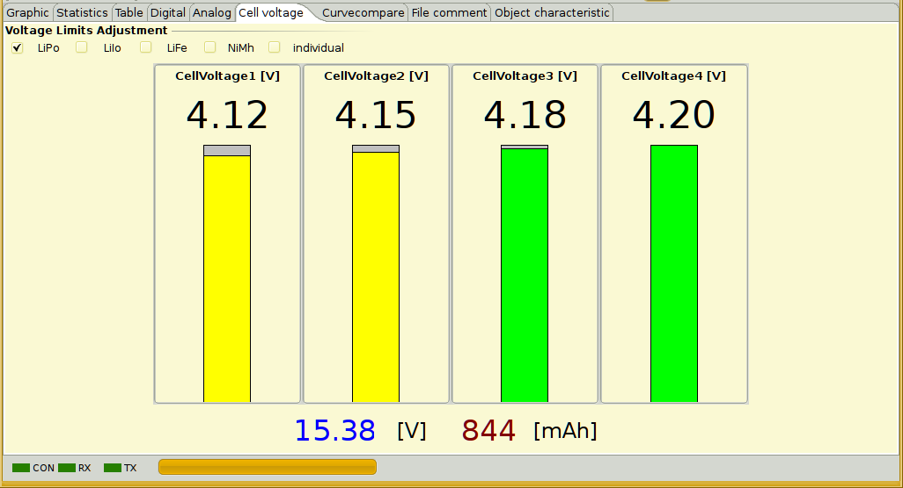
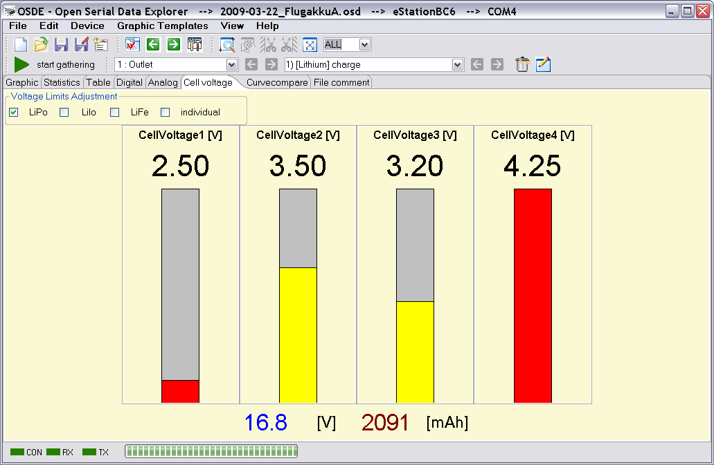
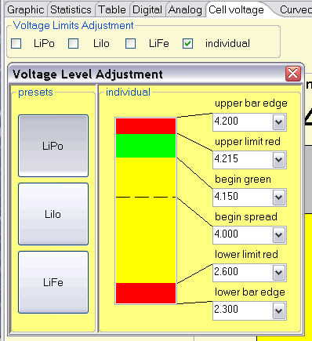

The cell voltage view can only be used if the device enables this measurements. In most cases this comes true for Lithium battery cells charger. The voltage values are displayed as value and as bar graph.

If the voltage values of the displayed cells has only a small difference the bar graph will spread to make differences more visible. If a cell voltage is lower than 2.60 Volt or above 4.20 Volt the bar color will change to red. If the cell voltage is between 2.60 and 4.20 Volts the bar is colored yellow. The bar color changes to green if the cell voltage is exact 4.20 Volt.

The pictures should make this more clear.
 It is possible to configure the battery cell type regarding its voltage levels simply by selection for the popular types. If the connected device gives information about connected Lithuim cell types the right selection will be done automatically. Is this not the case it must be done manually, so it always a good idea to check the cell type selection. Is a cell type in use which is not direct selectable individual settings can be configured. The dialog which enables after selecting "individuel" shows all predefined cell types limits and enables your own cell type level configuration.